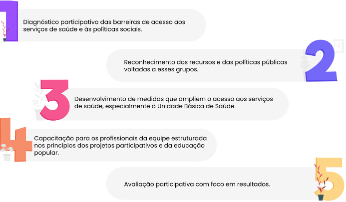

<div class="coluna-esquerda altura-1_1 largura-1_3 centro">
    
</div>
<div style="margin-left: 175px;margin-top: 50px;">
    <p>Em resumo, as etapas do trabalho devem incluir os seguintes passos:</p>
    
</div>
<script>
    $(() => {
        let janelas = $(document).find('[id^=janela]').css('cursor', 'pointer').on("click", apagarJanelas);
        apagarJanelas();
        $(document).find('[id^=btn]').hide();
        let botoes = $(document).find('[id^=botao]').map((index, botao) => {
            $(botao).css('cursor', 'pointer');
            $(botao).hover(() => {
                $(document).find(`[id=btn_${index + 1}_2]`).show();
            });
            $(botao).mouseleave(() => {
                $(document).find('[id^=btn]').hide();
            });
            $(botao).click(() => {
                apagarJanelas();
                $(janelas[index]).fadeIn();
            })
        })
        function apagarJanelas() {
            janelas.map((index, janela) => {
                $(janela).hide();
            })
        }
    })
</script>